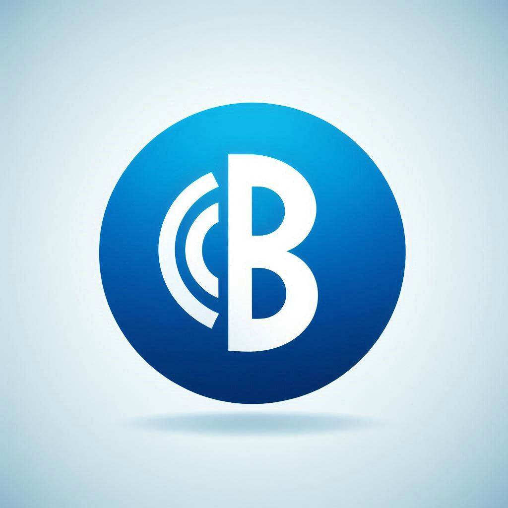

Diccionario
IEEE

- Definición
-
(I E cubo) Es un instituto de ingenieros en EEUU que se dedican a hacer estándares para la industria
- Ejemplo
-
El estándar IEEE 802.11 es el que define como funciona el bluetooth
Byte
- Definición
-
Es un número binario formado por ocho bits. Con un byte puedes contar desde 0 hasta 15.
- Ejemplo
-
0000 es cero y 1010 es diez y 1111 es quince
Hexadecimal
- Definición
-
Es un una forma de contar en base 16. Se usa para agrupar los bits de 4 en cuatro y es más fácil de entender
- Ejemplo
-
El sistema RGB usa 3 bytes, el color amarillo es por ejemplo el ffff00